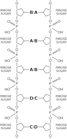

Chapter materials
NotebookLM-generated study materials for this chapter.
3. The Relation of Physics to Other Sciences
3–1 Introduction#
Physics is the most fundamental and all-inclusive of the sciences, and has had a profound effect on all scientific development. In fact, physics is the present-day equivalent of what used to be called natural philosophy, from which most of our modern sciences arose. Students of many fields find themselves studying physics because of the basic role it plays in all phenomena. In this chapter we shall try to explain what the fundamental problems in the other sciences are, but of course it is impossible in so small a space really to deal with the complex, subtle, beautiful matters in these other fields. Lack of space also prevents our discussing the relation of physics to engineering, industry, society, and war, or even the most remarkable relationship between mathematics and physics. (Mathematics is not a science from our point of view, in the sense that it is not a natural science. The test of its validity is not experiment.) We must, incidentally, make it clear from the beginning that if a thing is not a science, it is not necessarily bad. For example, love is not a science. So, if something is said not to be a science, it does not mean that there is something wrong with it; it just means that it is not a science.
3–2 Chemistry#
The science which is perhaps the most deeply affected by physics is chemistry. Historically, the early days of chemistry dealt almost entirely with what we now call inorganic chemistry, the chemistry of substances which are not associated with living things. Considerable analysis was required to discover the existence of the many elements and their relationships—how they make the various relatively simple compounds found in rocks, earth, etc. This early chemistry was very important for physics. The interaction between the two sciences was very great because the theory of atoms was substantiated to a large extent by experiments in chemistry. The theory of chemistry, i.e., of the reactions themselves, was summarized to a large extent in the periodic chart of Mendeleev, which brings out many strange relationships among the various elements, and it was the collection of rules as to which substance is combined with which, and how, that constituted inorganic chemistry. All these rules were ultimately explained in principle by quantum mechanics, so that theoretical chemistry is in fact physics. On the other hand, it must be emphasized that this explanation is in principle. We have already discussed the difference between knowing the rules of the game of chess, and being able to play. So it is that we may know the rules, but we cannot play very well. It turns out to be very difficult to predict precisely what will happen in a given chemical reaction; nevertheless, the deepest part of theoretical chemistry must end up in quantum mechanics.
There is also a branch of physics and chemistry which was developed by both sciences together, and which is extremely important. This is the method of statistics applied in a situation in which there are mechanical laws, which is aptly called statistical mechanics. In any chemical situation a large number of atoms are involved, and we have seen that the atoms are all jiggling around in a very random and complicated way. If we could analyze each collision, and be able to follow in detail the motion of each molecule, we might hope to figure out what would happen, but the many numbers needed to keep track of all these molecules exceeds so enormously the capacity of any computer, and certainly the capacity of the mind, that it was important to develop a method for dealing with such complicated situations. Statistical mechanics, then, is the science of the phenomena of heat, or thermodynamics. Inorganic chemistry is, as a science, now reduced essentially to what are called physical chemistry and quantum chemistry; physical chemistry to study the rates at which reactions occur and what is happening in detail (How do the molecules hit? Which pieces fly off first?, etc.), and quantum chemistry to help us understand what happens in terms of the physical laws.
The other branch of chemistry is organic chemistry, the chemistry of the substances which are associated with living things. For a time it was believed that the substances which are associated with living things were so marvelous that they could not be made by hand, from inorganic materials. This is not at all true—they are just the same as the substances made in inorganic chemistry, but more complicated arrangements of atoms are involved. Organic chemistry obviously has a very close relationship to the biology which supplies its substances, and to industry, and furthermore, much physical chemistry and quantum mechanics can be applied to organic as well as to inorganic compounds. However, the main problems of organic chemistry are not in these aspects, but rather in the analysis and synthesis of the substances which are formed in biological systems, in living things. This leads imperceptibly, in steps, toward biochemistry, and then into biology itself, or molecular biology.
3–3 Biology#
Thus we come to the science of biology, which is the study of living things. In the early days of biology, the biologists had to deal with the purely descriptive problem of finding out what living things there were, and so they just had to count such things as the hairs of the limbs of fleas. After these matters were worked out with a great deal of interest, the biologists went into the machinery inside the living bodies, first from a gross standpoint, naturally, because it takes some effort to get into the finer details.
There was an interesting early relationship between physics and biology in which biology helped physics in the discovery of the conservation of energy, which was first demonstrated by Mayer in connection with the amount of heat taken in and given out by a living creature.
If we look at the processes of biology of living animals more closely, we see many physical phenomena: the circulation of blood, pumps, pressure, etc. There are nerves: we know what is happening when we step on a sharp stone, and that somehow or other the information goes from the leg up. It is interesting how that happens. In their study of nerves, the biologists have come to the conclusion that nerves are very fine tubes with a complex wall which is very thin; through this wall the cell pumps ions, so that there are positive ions on the outside and negative ions on the inside, like a capacitor. Now this membrane has an interesting property; if it “discharges” in one place, i.e., if some of the ions were able to move through one place, so that the electric voltage is reduced there, that electrical influence makes itself felt on the ions in the neighborhood, and it affects the membrane in such a way that it lets the ions through at neighboring points also. This in turn affects it farther along, etc., and so there is a wave of “penetrability” of the membrane which runs down the fiber when it is “excited” at one end by stepping on the sharp stone. This wave is somewhat analogous to a long sequence of vertical dominoes; if the end one is pushed over, that one pushes the next, etc. Of course this will transmit only one message unless the dominoes are set up again; and similarly in the nerve cell, there are processes which pump the ions slowly out again, to get the nerve ready for the next impulse. So it is that we know what we are doing (or at least where we are). Of course the electrical effects associated with this nerve impulse can be picked up with electrical instruments, and because there are electrical effects, obviously the physics of electrical effects has had a great deal of influence on understanding the phenomenon.
The opposite effect is that, from somewhere in the brain, a message is sent out along a nerve. What happens at the end of the nerve? There the nerve branches out into fine little things, connected to a structure near a muscle, called an endplate. For reasons which are not exactly understood, when the impulse reaches the end of the nerve, little packets of a chemical called acetylcholine are shot off (five or ten molecules at a time) and they affect the muscle fiber and make it contract—how simple! What makes a muscle contract? A muscle is a very large number of fibers close together, containing two different substances, myosin and actomyosin, but the machinery by which the chemical reaction induced by acetylcholine can modify the dimensions of the muscle is not yet known. Thus the fundamental processes in the muscle that make mechanical motions are not known.
Biology is such an enormously wide field that there are hosts of other problems that we cannot mention at all—problems on how vision works (what the light does in the eye), how hearing works, etc. (The way in which thinking works we shall discuss later under psychology.) Now, these things concerning biology which we have just discussed are, from a biological standpoint, really not fundamental, at the bottom of life, in the sense that even if we understood them we still would not understand life itself. To illustrate: the men who study nerves feel their work is very important, because after all you cannot have animals without nerves. But you can have life without nerves. Plants have neither nerves nor muscles, but they are working, they are alive, just the same. So for the fundamental problems of biology we must look deeper; when we do, we discover that all living things have a great many characteristics in common. The most common feature is that they are made of cells, within each of which is complex machinery for doing things chemically. In plant cells, for example, there is machinery for picking up light and generating glucose, which is consumed in the dark to keep the plant alive. When the plant is eaten the glucose itself generates in the animal a series of chemical reactions very closely related to photosynthesis (and its opposite effect in the dark) in plants.
In the cells of living systems there are many elaborate chemical reactions, in which one compound is changed into another and another. To give some impression of the enormous efforts that have gone into the study of biochemistry, the chart in Fig. 3–1 summarizes our knowledge to date on just one small part of the many series of reactions which occur in cells, perhaps a percent or so of it.
Here we see a whole series of molecules which change from one to another in a sequence or cycle of rather small steps. It is called the Krebs cycle, the respiratory cycle. Each of the chemicals and each of the steps is fairly simple, in terms of what change is made in the molecule, but—and this is a centrally important discovery in biochemistry—these changes are relatively difficult to accomplish in a laboratory. If we have one substance and another very similar substance, the one does not just turn into the other, because the two forms are usually separated by an energy barrier or “hill.” Consider this analogy: If we wanted to take an object from one place to another, at the same level but on the other side of a hill, we could push it over the top, but to do so requires the addition of some energy. Thus most chemical reactions do not occur, because there is what is called an activation energy in the way. In order to add an extra atom to our chemical requires that we get it close enough that some rearrangement can occur; then it will stick. But if we cannot give it enough energy to get it close enough, it will not go to completion, it will just go part way up the “hill” and back down again. However, if we could literally take the molecules in our hands and push and pull the atoms around in such a way as to open a hole to let the new atom in, and then let it snap back, we would have found another way, around the hill, which would not require extra energy, and the reaction would go easily. Now there actually are, in the cells, very large molecules, much larger than the ones whose changes we have been describing, which in some complicated way hold the smaller molecules just right, so that the reaction can occur easily. These very large and complicated things are called enzymes. (They were first called ferments, because they were originally discovered in the fermentation of sugar. In fact, some of the first reactions in the cycle were discovered there.) In the presence of an enzyme the reaction will go.
An enzyme is made of another substance called protein. Enzymes are very big and complicated, and each one is different, each being built to control a certain special reaction. The names of the enzymes are written in Fig. 3–1 at each reaction. (Sometimes the same enzyme may control two reactions.) We emphasize that the enzymes themselves are not involved in the reaction directly. They do not change; they merely let an atom go from one place to another. Having done so, the enzyme is ready to do it to the next molecule, like a machine in a factory. Of course, there must be a supply of certain atoms and a way of disposing of other atoms. Take hydrogen, for example: there are enzymes which have special units on them which carry the hydrogen for all chemical reactions. For example, there are three or four hydrogen-reducing enzymes which are used all over our cycle in different places. It is interesting that the machinery which liberates some hydrogen at one place will take that hydrogen and use it somewhere else.
The most important feature of the cycle of Fig. 3–1 is the transformation from GDP to GTP (guanosine-di-phosphate to guanosine-tri-phosphate) because the one substance has much more energy in it than the other. Just as there is a “box” in certain enzymes for carrying hydrogen atoms around, there are special energy -carrying “boxes” which involve the triphosphate group. So, GTP has more energy than GDP and if the cycle is going one way, we are producing molecules which have extra energy and which can go drive some other cycle which requires energy, for example the contraction of muscle. The muscle will not contract unless there is GTP. We can take muscle fiber, put it in water, and add GTP, and the fibers contract, changing GTP to GDP if the right enzymes are present. So the real system is in the GDP-GTP transformation; in the dark the GTP which has been stored up during the day is used to run the whole cycle around the other way. An enzyme, you see, does not care in which direction the reaction goes, for if it did it would violate one of the laws of physics.
Physics is of great importance in biology and other sciences for still another reason, that has to do with experimental techniques. In fact, if it were not for the great development of experimental physics, these biochemistry charts would not be known today. The reason is that the most useful tool of all for analyzing this fantastically complex system is to label the atoms which are used in the reactions. Thus, if we could introduce into the cycle some carbon dioxide which has a “green mark” on it, and then measure after three seconds where the green mark is, and again measure after ten seconds, etc., we could trace out the course of the reactions. What are the “green marks”? They are different isotopes. We recall that the chemical properties of atoms are determined by the number of electrons, not by the mass of the nucleus. But there can be, for example in carbon, six neutrons or seven neutrons, together with the six protons which all carbon nuclei have. Chemically, the two atoms C ^{12} and C ^{13} are the same, but they differ in weight and they have different nuclear properties, and so they are distinguishable. By using these isotopes of different weights, or even radioactive isotopes like C ^{14}, which provide a more sensitive means for tracing very small quantities, it is possible to trace the reactions.
Now, we return to the description of enzymes and proteins. Not all proteins are enzymes, but all enzymes are proteins. There are many proteins, such as the proteins in muscle, the structural proteins which are, for example, in cartilage and hair, skin, etc., that are not themselves enzymes. However, proteins are a very characteristic substance of life: first of all they make up all the enzymes, and second, they make up much of the rest of living material. Proteins have a very interesting and simple structure. They are a series, or chain, of different amino acids. There are twenty different amino acids, and they all can combine with each other to form chains in which the backbone is CO-NH, etc. Proteins are nothing but chains of various ones of these twenty amino acids. Each of the amino acids probably serves some special purpose. Some, for example, have a sulfur atom at a certain place; when two sulfur atoms are in the same protein, they form a bond, that is, they tie the chain together at two points and form a loop. Another has extra oxygen atoms which make it an acidic substance, another has a basic characteristic. Some of them have big groups hanging out to one side, so that they take up a lot of space. One of the amino acids, called proline, is not really an amino acid, but imino acid. There is a slight difference, with the result that when proline is in the chain, there is a kink in the chain. If we wished to manufacture a particular protein, we would give these instructions: put one of those sulfur hooks here; next, add something to take up space; then attach something to put a kink in the chain. In this way, we will get a complicated-looking chain, hooked together and having some complex structure; this is presumably just the manner in which all the various enzymes are made. One of the great triumphs in recent times (since 1960), was at last to discover the exact spatial atomic arrangement of certain proteins, which involve some fifty-six or sixty amino acids in a row. Over a thousand atoms (more nearly two thousand, if we count the hydrogen atoms) have been located in a complex pattern in two proteins. The first was hemoglobin. One of the sad aspects of this discovery is that we cannot see anything from the pattern; we do not understand why it works the way it does. Of course, that is the next problem to be attacked.
Another problem is how do the enzymes know what to be? A red-eyed fly makes a red-eyed fly baby, and so the information for the whole pattern of enzymes to make red pigment must be passed from one fly to the next. This is done by a substance in the nucleus of the cell, not a protein, called DNA (short for desoxyribose nucleic acid). This is the key substance which is passed from one cell to another (for instance sperm cells consist mostly of DNA) and carries the information as to how to make the enzymes. DNA is the “blueprint.” What does the blueprint look like and how does it work? First, the blueprint must be able to reproduce itself. Secondly, it must be able to instruct the protein. Concerning the reproduction, we might think that this proceeds like cell reproduction. Cells simply grow bigger and then divide in half. Must it be thus with DNA molecules, then, that they too grow bigger and divide in half? Every atom certainly does not grow bigger and divide in half! No, it is impossible to reproduce a molecule except by some more clever way.

The structure of the substance DNA was studied for a long time, first chemically to find the composition, and then with x-rays to find the pattern in space. The result was the following remarkable discovery: The DNA molecule is a pair of chains, twisted upon each other. The backbone of each of these chains, which are analogous to the chains of proteins but chemically quite different, is a series of sugar and phosphate groups, as shown in Fig. 3–2. Now we see how the chain can contain instructions, for if we could split this chain down the middle, we would have a series BAADC\ldots and every living thing could have a different series. Thus perhaps, in some way, the specific instructions for the manufacture of proteins are contained in the specific series of the DNA.
Attached to each sugar along the line, and linking the two chains together, are certain pairs of cross-links. However, they are not all of the same kind; there are four kinds, called adenine, thymine, cytosine, and guanine, but let us call them A, B, C, and D. The interesting thing is that only certain pairs can sit opposite each other, for example A with B and C with D. These pairs are put on the two chains in such a way that they “fit together,” and have a strong energy of interaction. However, C will not fit with A, and B will not fit with C; they will only fit in pairs, A against B and C against D. Therefore if one is C, the other must be D, etc. Whatever the letters may be in one chain, each one must have its specific complementary letter on the other chain.
What then about reproduction? Suppose we split this chain in two. How can we make another one just like it? If, in the substances of the cells, there is a manufacturing department which brings up phosphate, sugar, and A, B, C, D units not connected in a chain, the only ones which will attach to our split chain will be the correct ones, the complements of BAADC\ldots, namely, ABBCD\ldots Thus what happens is that the chain splits down the middle during cell division, one half ultimately to go with one cell, the other half to end up in the other cell; when separated, a new complementary chain is made by each half-chain.
Next comes the question, precisely how does the order of the A, B, C, D units determine the arrangement of the amino acids in the protein? This is the central unsolved problem in biology today. The first clues, or pieces of information, however, are these: There are in the cell tiny particles called ribosomes, and it is now known that that is the place where proteins are made. But the ribosomes are not in the nucleus, where the DNA and its instructions are. Something seems to be the matter. However, it is also known that little molecule pieces come off the DNA—not as long as the big DNA molecule that carries all the information itself, but like a small section of it. This is called RNA, but that is not essential. It is a kind of copy of the DNA, a short copy. The RNA, which somehow carries a message as to what kind of protein to make goes over to the ribosome; that is known. When it gets there, protein is synthesized at the ribosome. That is also known. However, the details of how the amino acids come in and are arranged in accordance with a code that is on the RNA are, as yet, still unknown. We do not know how to read it. If we knew, for example, the “lineup” A, B, C, C, A, we could not tell you what protein is to be made.
Certainly no subject or field is making more progress on so many fronts at the present moment, than biology, and if we were to name the most powerful assumption of all, which leads one on and on in an attempt to understand life, it is that all things are made of atoms, and that everything that living things do can be understood in terms of the jigglings and wigglings of atoms.
3–4 Astronomy#
In this rapid-fire explanation of the whole world, we must now turn to astronomy. Astronomy is older than physics. In fact, it got physics started by showing the beautiful simplicity of the motion of the stars and planets, the understanding of which was the beginning of physics. But the most remarkable discovery in all of astronomy is that the stars are made of atoms of the same kind as those on the earth. 1 How was this done? Atoms liberate light which has definite frequencies, something like the timbre of a musical instrument, which has definite pitches or frequencies of sound. When we are listening to several different tones we can tell them apart, but when we look with our eyes at a mixture of colors we cannot tell the parts from which it was made, because the eye is nowhere near as discerning as the ear in this connection. However, with a spectroscope we can analyze the frequencies of the light waves and in this way we can see the very tunes of the atoms that are in the different stars. As a matter of fact, two of the chemical elements were discovered on a star before they were discovered on the earth. Helium was discovered on the sun, whence its name, and technetium was discovered in certain cool stars. This, of course, permits us to make headway in understanding the stars, because they are made of the same kinds of atoms which are on the earth. Now we know a great deal about the atoms, especially concerning their behavior under conditions of high temperature but not very great density, so that we can analyze by statistical mechanics the behavior of the stellar substance. Even though we cannot reproduce the conditions on the earth, using the basic physical laws we often can tell precisely, or very closely, what will happen. So it is that physics aids astronomy. Strange as it may seem, we understand the distribution of matter in the interior of the sun far better than we understand the interior of the earth. What goes on inside a star is better understood than one might guess from the difficulty of having to look at a little dot of light through a telescope, because we can calculate what the atoms in the stars should do in most circumstances.
One of the most impressive discoveries was the origin of the energy of the stars, that makes them continue to burn. One of the men who discovered this was out with his girlfriend the night after he realized that nuclear reactions must be going on in the stars in order to make them shine. She said “Look at how pretty the stars shine!” He said “Yes, and right now I am the only man in the world who knows why they shine.” She merely laughed at him. She was not impressed with being out with the only man who, at that moment, knew why stars shine. Well, it is sad to be alone, but that is the way it is in this world.
It is the nuclear “burning” of hydrogen which supplies the energy of the sun; the hydrogen is converted into helium. Furthermore, ultimately, the manufacture of various chemical elements proceeds in the centers of the stars, from hydrogen. The stuff of which we are made, was “cooked” once, in a star, and spit out. How do we know? Because there is a clue. The proportion of the different isotopes—how much C ^{12}, how much C ^{13}, etc., is something which is never changed by chemical reactions, because the chemical reactions are so much the same for the two. The proportions are purely the result of nuclear reactions. By looking at the proportions of the isotopes in the cold, dead ember which we are, we can discover what the furnace was like in which the stuff of which we are made was formed. That furnace was like the stars, and so it is very likely that our elements were “made” in the stars and spit out in the explosions which we call novae and supernovae. Astronomy is so close to physics that we shall study many astronomical things as we go along.
3–5 Geology#
We turn now to what are called earth sciences, or geology. First, meteorology and the weather. Of course the instruments of meteorology are physical instruments, and the development of experimental physics made these instruments possible, as was explained before. However, the theory of meteorology has never been satisfactorily worked out by the physicist. “Well,” you say, “there is nothing but air, and we know the equations of the motions of air.” Yes we do. “So if we know the condition of air today, why can’t we figure out the condition of the air tomorrow?” First, we do not really know what the condition is today, because the air is swirling and twisting everywhere. It turns out to be very sensitive, and even unstable. If you have ever seen water run smoothly over a dam, and then turn into a large number of blobs and drops as it falls, you will understand what I mean by unstable. You know the condition of the water before it goes over the spillway; it is perfectly smooth; but the moment it begins to fall, where do the drops begin? What determines how big the lumps are going to be and where they will be? That is not known, because the water is unstable. Even a smooth moving mass of air, in going over a mountain turns into complex whirlpools and eddies. In many fields we find this situation of turbulent flow that we cannot analyze today. Quickly we leave the subject of weather, and discuss geology!
The question basic to geology is, what makes the earth the way it is? The most obvious processes are in front of your very eyes, the erosion processes of the rivers, the winds, etc. It is easy enough to understand these, but for every bit of erosion there is an equal amount of something else going on. Mountains are no lower today, on the average, than they were in the past. There must be mountain- forming processes. You will find, if you study geology, that there are mountain-forming processes and volcanism, which nobody understands but which is half of geology. The phenomenon of volcanoes is really not understood. What makes an earthquake is, ultimately, not understood. It is understood that if something is pushing something else, it snaps and will slide—that is all right. But what pushes, and why? The theory is that there are currents inside the earth—circulating currents, due to the difference in temperature inside and outside—which, in their motion, push the surface slightly. Thus if there are two opposite circulations next to each other, the matter will collect in the region where they meet and make belts of mountains which are in unhappy stressed conditions, and so produce volcanoes and earthquakes.
What about the inside of the earth? A great deal is known about the speed of earthquake waves through the earth and the density of distribution of the earth. However, physicists have been unable to get a good theory as to how dense a substance should be at the pressures that would be expected at the center of the earth. In other words, we cannot figure out the properties of matter very well in these circumstances. We do much less well with the earth than we do with the conditions of matter in the stars. The mathematics involved seems a little too difficult, so far, but perhaps it will not be too long before someone realizes that it is an important problem, and really works it out. The other aspect, of course, is that even if we did know the density, we cannot figure out the circulating currents. Nor can we really work out the properties of rocks at high pressure. We cannot tell how fast the rocks should “give”; that must all be worked out by experiment.
3–6 Psychology#
Next, we consider the science of psychology. Incidentally, psychoanalysis is not a science: it is at best a medical process, and perhaps even more like witch-doctoring. It has a theory as to what causes disease—lots of different “spirits,” etc. The witch doctor has a theory that a disease like malaria is caused by a spirit which comes into the air; it is not cured by shaking a snake over it, but quinine does help malaria. So, if you are sick, I would advise that you go to the witch doctor because he is the man in the tribe who knows the most about the disease; on the other hand, his knowledge is not science. Psychoanalysis has not been checked carefully by experiment, and there is no way to find a list of the number of cases in which it works, the number of cases in which it does not work, etc.
The other branches of psychology, which involve things like the physiology of sensation—what happens in the eye, and what happens in the brain—are, if you wish, less interesting. But some small but real progress has been made in studying them. One of the most interesting technical problems may or may not be called psychology. The central problem of the mind, if you will, or the nervous system, is this: when an animal learns something, it can do something different than it could before, and its brain cell must have changed too, if it is made out of atoms. In what way is it different? We do not know where to look, or what to look for, when something is memorized. We do not know what it means, or what change there is in the nervous system, when a fact is learned. This is a very important problem which has not been solved at all. Assuming, however, that there is some kind of memory thing, the brain is such an enormous mass of interconnecting wires and nerves that it probably cannot be analyzed in a straightforward manner. There is an analog of this to computing machines and computing elements, in that they also have a lot of lines, and they have some kind of element, analogous, perhaps, to the synapse, or connection of one nerve to another. This is a very interesting subject which we have not the time to discuss further—the relationship between thinking and computing machines. It must be appreciated, of course, that this subject will tell us very little about the real complexities of ordinary human behavior. All human beings are so different. It will be a long time before we get there. We must start much further back. If we could even figure out how a dog works, we would have gone pretty far. Dogs are easier to understand, but nobody yet knows how dogs work.
3–7 How did it get that way?#
In order for physics to be useful to other sciences in a theoretical way, other than in the invention of instruments, the science in question must supply to the physicist a description of the object in a physicist’s language. They can say “why does a frog jump?,” and the physicist cannot answer. If they tell him what a frog is, that there are so many molecules, there is a nerve here, etc., that is different. If they will tell us, more or less, what the earth or the stars are like, then we can figure it out. In order for physical theory to be of any use, we must know where the atoms are located. In order to understand the chemistry, we must know exactly what atoms are present, for otherwise we cannot analyze it. That is but one limitation, of course.
There is another kind of problem in the sister sciences which does not exist in physics; we might call it, for lack of a better term, the historical question. How did it get that way? If we understand all about biology, we will want to know how all the things which are on the earth got there. There is the theory of evolution, an important part of biology. In geology, we not only want to know how the mountains are forming, but how the entire earth was formed in the beginning, the origin of the solar system, etc. That, of course, leads us to want to know what kind of matter there was in the world. How did the stars evolve? What were the initial conditions? That is the problem of astronomical history. A great deal has been found out about the formation of stars, the formation of elements from which we were made, and even a little about the origin of the universe.
There is no historical question being studied in physics at the present time. We do not have a question, “Here are the laws of physics, how did they get that way?” We do not imagine, at the moment, that the laws of physics are somehow changing with time, that they were different in the past than they are at present. Of course they may be, and the moment we find they are, the historical question of physics will be wrapped up with the rest of the history of the universe, and then the physicist will be talking about the same problems as astronomers, geologists, and biologists.
Finally, there is a physical problem that is common to many fields, that is very old, and that has not been solved. It is not the problem of finding new fundamental particles, but something left over from a long time ago—over a hundred years. Nobody in physics has really been able to analyze it mathematically satisfactorily in spite of its importance to the sister sciences. It is the analysis of circulating or turbulent fluids. If we watch the evolution of a star, there comes a point where we can deduce that it is going to start convection, and thereafter we can no longer deduce what should happen. A few million years later the star explodes, but we cannot figure out the reason. We cannot analyze the weather. We do not know the patterns of motions that there should be inside the earth. The simplest form of the problem is to take a pipe that is very long and push water through it at high speed. We ask: to push a given amount of water through that pipe, how much pressure is needed? No one can analyze it from first principles and the properties of water. If the water flows very slowly, or if we use a thick goo like honey, then we can do it nicely. You will find that in your textbook. What we really cannot do is deal with actual, wet water running through a pipe. That is the central problem which we ought to solve some day, and we have not.
A poet once said, “The whole universe is in a glass of wine.” We will probably never know in what sense he meant that, for poets do not write to be understood. But it is true that if we look at a glass of wine closely enough we see the entire universe. There are the things of physics: the twisting liquid which evaporates depending on the wind and weather, the reflections in the glass, and our imagination adds the atoms. The glass is a distillation of the earth’s rocks, and in its composition we see the secrets of the universe’s age, and the evolution of stars. What strange array of chemicals are in the wine? How did they come to be? There are the ferments, the enzymes, the substrates, and the products. There in wine is found the great generalization: all life is fermentation. Nobody can discover the chemistry of wine without discovering, as did Louis Pasteur, the cause of much disease. How vivid is the claret, pressing its existence into the consciousness that watches it! If our small minds, for some convenience, divide this glass of wine, this universe, into parts—physics, biology, geology, astronomy, psychology, and so on—remember that nature does not know it! So let us put it all back together, not forgetting ultimately what it is for. Let it give us one more final pleasure: drink it and forget it all!